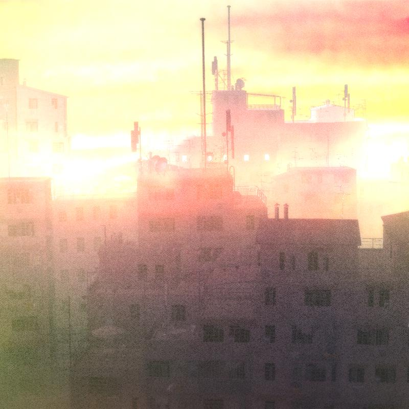

发布于 2020/12/17 共 1 首歌
2020年10月13日、同年12月18日にずっと真夜中でいいのに为即将上映的电影『約束のネバーランド』创作主题曲「正しくなれない」。
试听曲：ずっと真夜中でいいのに - 正しくなれない 正しくなれない 霧が毒をみた 无法坚守正理 林中毒雾弥漫 片っ端から確かめたくて 渴望着从根源探求 考え続けたい 为此思绪不断 偽りで出会えた 僕らは何一つも 路途常伴虚假 我们也从未走散 奪われてないから 因为我们不愿被夺去 僕ら育ってゆくみたい 愛されるみたい 我们似乎正一天天成长着 也似乎被爱意填满 暖かな波を読む 歌咏着温暖的波潮 今日を 今を選ぶ 澄んだ朝色 选择了今日的现在 望见了早晨的颜色 尋ねる声で何度でも 朝着晨曦不断询问 僕ら嘘つきだね、両想いだね “我们是大骗子呢 但也都是相伴的伙伴” 枯れ果てるまで泣き笑い 在枯萎之前哭着 笑着 今日を 受け入れてゆく 活在当下 活在今日 喜びあった日々を 忘れはしないけど 总会有喜悦的日子 永世难忘 知らない方が幸せだって 一无所知的我们也在幸福地生活 知れば 知り得るほど 但只要探知到真相 便会记在心中 正しくなれない 霧が毒をみた 无法坚守正理 林中毒雾弥漫 片っ端から確かめたくて 渴望着从根源探求 考え続けたい 为此思绪不断 偽りで出会えた 僕らは何一つも 路途常伴虚假 我们也从未走散 奪われてないから 因为我们不愿被夺去 今 心を閉ざさぬように 现在 为了不用紧锁心门 腰眈々と 訓練を続けよ 为了更进一步 我们的训练总不会结束 枯れ木に 笑顔だけ 站在枯干的树上 只是笑容以待 君の肉体 本心全て 你的肉体 本心的全部 無駄になんかさせないよ 我都不会让它们白白浪费 ねぇ、知り得る方が幸せだって “呐、知晓真相后的幸福“ 辿り着いてもいい？ “我们真的可以实现吗” 君だけが見る 夕焼け風鏡 我只是看着你 晚霞时分的凉风吹在了我的眼镜上 僕でもいつか 解る日まで 我也总会终有一日 将这一切知晓 考え続けたい 为此思绪不断 偽りで出会えた 撓る枝分かれよ 路途常伴虚假 我拨开弯曲的树枝 導かれ 指清了方向 大したもんじゃない 無駄なもんじゃない 这并非什么伟事 也绝未因此辜负 視野は脳裏を 寛大にしていくように 视野在脑海中渐渐开阔 ずっと もうずっと 茶化されようが 一直 一直都在 被愚弄着 折れない砂の罠 走入细沙流动的陷阱 可能性が 見逃せるならば 只要能有可能逃脱 可能性を 諦められないから 就绝不会放过活着的可能 未だ 把握现在！ 正しくなれない 霧が毒をみた 无法坚守正理 林中毒雾弥漫 片っ端から確かめたくて 渴望着从根源探求 考え続けたい 为此思绪不断 偽りで出会えた 僕らは何一つも 路途常伴虚假 我们也从未走散 全て嫌われても 即便被全世界所厌恶 奪われてないから 也绝不愿被恶意夺去